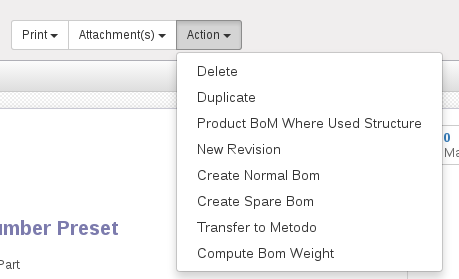
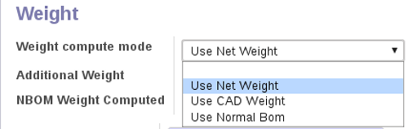

<section class="oe_container oe_dark">
    <div class="oe_row oe_spaced">
        <h2 class="oe_slogan">Plm Automatic Weight</h2>
        <h3 class="oe_centeralign">Odoo version covered : 10.0</h3>
        <div class="oe_span12">
            <p class="oe_mt32">
				This module allows you compute product weight due to Normal BOM calculation, using CAD weight or setting a custom weight.
            </p>
            <p class="oe_mt32">
            How it works:
            	<h3 class="oe_centeralign">Normal BOM Computation</h3>
            	<br></br>
            	<ul>
					<li>Go to Search on Engineering Parts and select one or more products:</li>
					<li>Go to the action Menu</li>
					<br></br>
					<li></li>
					<br></br>
					<li>Click the <b>Compute Bom Weight</b> action, bom weight is computed and <b>NBOM Weight Computed</b> field is evaluated:</li>
					<br></br>
					<li></li>
					<br></br>
            	</ul>
            	<br></br>
            	<br></br>
            	<br></br>
            	<p>
            	<h3 class="oe_centeralign">Product Weight Computation</h3>
            	<br></br>
            	Once you have the weight computed you can decide how weight has to be computed, so enter in edit mode on a single product:
            	</p>
            	<ul>
					<li>You can find three possibilities to compute weight:</li>
					<br></br>
					<li></li>
					<br></br>
					<ul>
						<li>Use Net Weight: In production step only gross weight is used.</li>
						<li>Use CAD Weight: <b>CAD Weight</b> is added to <b>Additional Weight</b> ad result is set in in <b>Gross Weight</b>.</li>
						<li>Use Normal Bom: <b>NBOM Weight Computed</b> is added to <b>Additional Weight</b> and the result is set in <b>Gross Weight</b>.</li>
					</ul>
				</ul>
            </p>
         </div>
    </div>
</section>